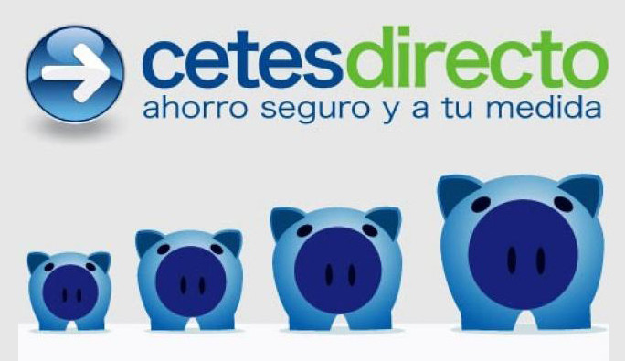

La importancia del ahorro
Según un estudio realizado por la UNAM en conjunto con una institución financiera casi un tercio de la población carece de educación financiera. Lo que quiere decir que «no manejan sus recursos económicos a conciencia, no ahorran y se encuentran en un estado de constante endeudamiento» 1. Esta misma investigación reveló que 96 % de los mexicanos encuestados manifestó nunca haberse informado acerca de los diversos productos financieros. Además, un 70.2 % recurre a créditos informales que pueden perjudicar sus finanzas.
Como podemos observar, las condiciones culturales actuales en México revelan un atraso considerable en educación financiera. Esto resulta preocupante ya que el desconocimiento de la educación financiera dificulta el encontrar un equilibrio financiero que permitiera tener un nivel de seguridad económica en el presente inmediato y en el futuro, administrar, incrementar y proteger el patrimonio de las familias mexicanas. Podemos decir que así como la educación física es esencial en el desarrollo saludable de la vida, una adecuada educación financiera es imprescindible en las sociedades modernas. Y el primer paso para tener unas finanzas sanas, alcanzar nuestros objetivos, o bien, poder hacer frente a los incidentes de la vida es cultivar el hábito del ahorro.
El ahorro en México
El ahorro informal
De acuerdo con la encuesta AMAFORE, tan sólo 48 % de las mujeres ahorran y un 55 % de los hombres lo hacen. Y de estos, el 57 % de las mujeres y el 49 % de los hombres lo hacen en su casa o alcancías, lo que convierte el ahorro informal en la forma número 1 de ahorro en México. A esta le siguen el ahorro en cuentas bancarias con 19 % y 26 % respectivamente y las tandas con 11 % y 6 %. A su vez, la ENIF 2018 destacó que 63.2 % de los mexicanos recurren a métodos de ahorro informal.
La inflación
Las estadísticas nos demuestran que en México sí se ahorra, pero se ahorra con métodos que pueden resultar ineficientes y hasta peligrosos. El primer problema es la inflación. Cuando se ahorra fuera de una institución financiera el dinero pierde valor adquisitivo año con año. Una de las razones por las que esto sucede es
debido a un incremento en la cantidad de dinero en circulación. Esto se debe a que la gente tiene más dinero para gastar y va a demandar más productos, y si la cantidad de bienes y servicios en el mercado es la misma, los precios van a seguir elevándose, dado que la cantidad ofrecida no ha aumentado para abastecer el incremento en la demanda2.
En pocas palabras, cuando se ahorra de modo informal, nuestro dinero vale menos y se requerirá cada vez más para comprar una misma cosa conforme pasa el tiempo. Es por ello que para la economista Valeria Moy el ahorro informal es
una forma profundamente ineficiente de ahorrar. El ahorro en alcancías o debajo del colchón pierde poder adquisitivo cada día que pasa. Aunque actualmente estemos viviendo bajas tasas de inflación, es innegable que con el paso del tiempo el valor de esos recursos se erosiona. Ese ahorro se vuelve de alguna u otra forma ahorro de corto plazo3.
Esto lo dijo en el 2016, cuando la cifra de inflación rondaba el 2.82 %. Hoy, después de todas las afectaciones que trajo consigo la pandemia, la inflación en México ya supera el 6 %. Cuando la inflación se suma anualmente, aquello para lo que poseíamos poder adquisitivo se va disminuyendo exponencialmente. La inflación acumulada de inicios de 2000 a septiembre de 2021 sumaría 155.06 % de inflación; lo que significa que algo que a inicios del 2000 costaba $100, te costará ahora $15 506 4.
Tu dinero no está seguro
Aun conocidos de años han terminado por defraudar a quienes habían confiado el dinero en una de sus tandas. Los mecanismos informales de ahorro no involucran instituciones reguladoras que obligasen al involucrado a responder por la pérdida del dinero. Nunca se sabe si la persona encargada de la tanda va a responsabilizarse del dinero confiado. Incluso cuando se ahorra en el hogar, en caso de un allanamiento o simplemente un extravío el dinero se daría por perdido. Sin mencionar que, al incumplir algún pago en las tandas, por cualquier motivo, empezarán las búsquedas, los reclamos y las indirectas. Cualquier sospecha de incumplimiento podría hacer temblar la estructura.
Más adelante hablaremos del caso particular de Cetes, por ahora podemos mencionar los seguros que protegen tu dinero dentro del sistema regulado financiero. Por mencionar algunos, los bancos cuentan con la protección de IPAB, mientras que las Sociedades Financieras Populares con la del Prosofipo. Además que, ante cualquier reclamo, la CONDUSEF puede interceder o asesorarte.
Los impuestos
Cuando ahorras informalmente te ves obligado a gastar siempre en efectivo. Muchos productos que se han tornado útiles y hasta indispensables para la vida diaria deben ser pagados por medios diferentes al efectivo. Y ya no habría que hablar de ahorros proporcionalmente similares al que requeriría comprar una vivienda que se volverían dificultosos de acceder y/o acumular. Algunas cuentas ofrecen créditos mayores dependiendo del saldo promedio. Citando nuevamente a Valeria Moy: «Ese ahorro se vuelve de alguna u otra forma ahorro de corto plazo. No es posible ahorrar en alcancías para comprar una casa o para pagar la universidad de los hijos».
Ahorro formal en México
México cuenta con un amplio abanico de opciones para ahorrar formalmente. Desde los bancos, pasando por las sofomes, sofipos y hasta el gobierno, todos estos medios están asegurados, dependiendo del caso, por la CONDUSEF, la CNBV, y demás organismos encargados. Varios de los instrumentos formales te facilitan sobrellevar, cuando no superar el nivel de inflación anual.
¿Qué son los Cetes, y por qué deberías conocerlos?
 Los Cetes, Certificados de la tesorería, son bonos que el Gobierno de México emite para obtener financiamiento que utilizará en obras públicas y demás proyectos en beneficio de la sociedad. En suma, prestarle al gobierno. A diferencia del rendimiento en los instrumentos bancarios, que suelen prestar el dinero guardado a particulares o a empresas, cuando tú le prestas al gobierno estás poniendo tu dinero en manos del deudor más estable de México. Es más probable que quebraran una gran cantidad de instituciones financieras, bancos y negocios antes de que el Gobierno de México lo hiciera. Y, en el peor de los casos, aunque no es lo ideal, el gobierno siempre puede recurrir a más deuda para financiar la anterior. En este sentido, México es un país estable. Su deuda con respecto al PIB es de solo 47.7 %, comparado a países como Japón cuya deuda con respecto al PIB es del 257 % o Grecia con un 182 %.
¿Cómo funcionan?
El Gobierno emite cada semana una cantidad limitada (pero enorme) de bonos a un precio menor al nominal. Imagina que estás comprando pagarés a 9 pesos que, al final de un plazo, el Gobierno te recomprará a un valor de 10 pesos. De esta forma no sólo mantienes tu dinero sino que sumas un rendimiento adicional que se va exponenciando si decides reinvertirlo.
Para acceder a los Cetes sólo necesitas entrar en https://www.cetesdirecto.com y abrir tu cuenta. El proceso es muy sencillo e incluso puedes interrumpir y reanudar el proceso en cualquier momento. Además cuentas con una calculadora que te permitirá anticipar el rendimiento que obtendrás dependiendo del tiempo y la cantidad que ingreses. El dinero queda a custodia de Nacional Financiera (NAFIN).
¿Y conviene?
Dicho todo lo anterior, pasemos a comparar algunos de los rendimientos que ofrecen solamente los bancos. De acuerdo con el Simulador de Ahorro e Inversión de la CONDUSEF 5, el banco que ofrece el menor rendimiento es BanBajio, con solo un 0.85 % de rendimiento. Por su parte, Banco Inmobiliario Mexicano ofrece la tasa más grande del sector bancario: 4.70 %. En tanto que Cetes concede una tasa del 4.94 %. Dado que la inflación actual se elevó muy por fuera de lo que el Banco Central había calculado debido a las condiciones atípicas mundiales, tomemos la inflación del 2020 como referencia para ver si sus rendimientos nos habrían protegido de la inflación, la cual fue de 3.15 %. Tan solo 3 de las 18 instituciones bancarias recogidas vencerían la inflación; Cetes lo habría vencido por 1.68 %.
En muchos de los casos, lo que hacen los bancos es tomar el dinero del cliente, invertirlo ellos mismos en Cetes y tomar una fracción de los rendimientos. Por eso prácticamente ninguna tasa ofrecida por los bancos supera a Cetes o ya siquiera se le acerca.
Aunado a esto, con Cetes no tendrás que preocuparte por el cálculo de impuestos. Cetes hace automáticamente la retención correspondiente y tú sólo tendrás que presentar tu declaración anual al final del año y será tan sencillo como instalar una aplicación en tu equipo: siguiente, siguiente, siguiente.
Por otro lado, en Cetes no tienes penalizaciones por retirar tu dinero anticipadamente e incluso cuentas con un fondo completamente líquido que puedes retirar todos los días hábiles en horario bancario (BONDDIA).
En conclusión:
- Ahorrar se ha convertido en un elemento imprescindible de las sociedades modernas y además útil para el cumplimiento de los objetivos personales, así como evitar que las crisis o las contingencias de la vida diaria nos quiten el sueño.
- Para esto existen diversas formas, pero sería conveniente preferir los mecanismos formales sobre los informales para evitar los riesgos de los segundos y contar con todos los beneficios de los primeros.
- Por su facilidad y liquidez Cetes podría ser una de las mejores opciones para ahorrar nuestro dinero de forma inteligente y segura.
_______________
1 Cetesdirecto. «Invierte en tu patrimonio». Cetesdirecto. Disponible en línea.
2 Educa Banxico. «¿Por qué aumentan los precios?» Educa Banxico. En línea.
3 Valeria Moy, «Ahorrando en alcancías». México ¿cómo vamos? En línea.
4 Calculadora de inflación acumulada. https://www.inegi.org.mx/app/indicesdeprecios/calculadorainflacion.aspx
5 Simulador de Ahorro e Inversión: https://simulador.condusef.gob.mx/condusefahorro/datos_ppa.php?o=p1
Fuentes:
- Cárdenas Salgado, Guillermo Jr et al. «México | ENIF 2018: 63.2% usan ahorro informal, 70.2% usan créditos informales». BBVA Research. https://www.bbvaresearch.com/publicaciones/mexico-enif-2018-63-2-usan-ahorro-informal-70-2-usan-creditos-informales/ (25/octubre/21).
- Cetesdirecto. «Invierte en tu patrimonio». Cetesdirecto. https://www.cetesdirecto.com/tablas/recursos/6-inviertePatrimonio.pdf (25/octubre/21).
- Educa Banxico. «¿Por qué aumentan los precios?» Educa Banxico. http://educa.banxico.org.mx/infografias_y_fichas/inflacion_infografias_/porque-aumentan-los-precios.html (28/octubre/21).
- Moy, Valeria. «Ahorrando en alcancías». México ¿cómo vamos? https://portal.mexicocomovamos.mx/?s=contenido&id=464 (25/octubre/21).
- Negrete García, Adolfo Miguel. «La cultura del ahorro en México». Este País. https://estepais.com/tendencias_y_opiniones/ahorro-a-la-mexicana/la-cultura-del-ahorro-en-mexico/ (25/octubre/21).
- Proteja su dinero. «Los contra de una tanda». Proteja su dinero. https://revista.condusef.gob.mx/2015/01/los-contra-de-una-tanda/ (25/octubre/21).
- Suárez, Estephanie. «En México predomina el ahorro informal, pero los mexicanos sí guardan el dinero». Bloomberg Línea. https://www.bloomberglinea.com.mx/2021/09/10/en-mexico-predomina-el-ahorro-informal-pero-los-mexicanos-si-guardan-el-dinero/ (25/octubre/21).